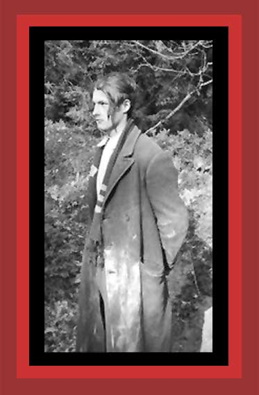

| Here is a prisoner in civilian clothes waiting to be murdered by the Germans in the forest near the Buchenwald concentration camp. Documentation: Democide: Nazi Genocide and Mass Murder. Source: "The Undeniable Holocaust.". From the Lorenz Schmuhl Collection, via the US Holocaust Memorial Museum Photo Archives. |